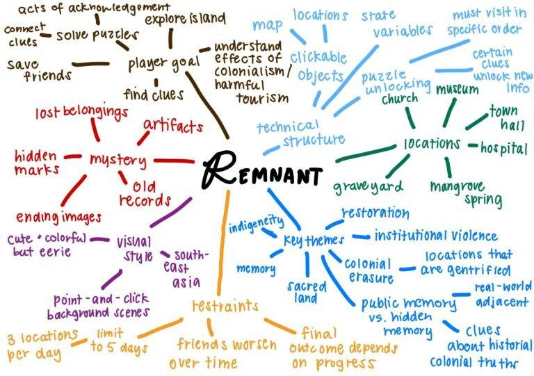

Remnant
overview
Remnant is a point-and-click horror game where players return to a fictional island town to lift the curses afflicting three friends, uncovering the colonial history behind each curse along the way. On a three-person team, I led UI/UX and narrative design and programmed gameplay in Ren'Py, taking the game from concept to a complete, playable MVP in a four-week build.
problem
Most strategy and simulation games about colonialism reward players for settling and conquering new land, and few ask players to examine the harm it caused. We saw a gap for a narrative game that shows how colonial history still shapes the present, using horror and mystery to make that history feel personal and asking players to slow down and pay attention.

target users
We designed for players who enjoy narrative games, puzzles, and mysteries, including people with little background in colonial history or point-and-click games. To make the game easy to learn without prior context, every location follows the same loop: explore, collect clues, and use them to solve a puzzle.
pain points
Across 10 playtests, most frustration came from the interface rather than the puzzles themselves. Players needed outside help to understand the core ledger puzzle, missed items they had picked up because the pickup was buried in dense dialogue, couldn't tell when a clue pointed to another location, and sometimes clicked leave by mistake, losing one of their limited daily visits with no way to undo it.